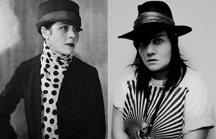

dunst radio sender stadig, og det er stadig lebberne, der styrer studiet.
Denne lørdag får Det Lesbiske Litteraturhjørne besøg af Djuna Barnes, som vil fortælle om den rigtige Djuna Barnes og tage os med ind i hendes litterære univers. Vi kommer selvfølgelig også til at høre om den falske Djuna Barnes, og hun har lovet at forkæle os med masser af lækkert lesbisk musik. Og hvis vi er heldige, falder der også lidt anekdoter af fra kendis-lebbernes verden.
Lyt med lørdag d. 26.11 kl. 19-21 på 92.9 FM (88.9 kabel) eller live stream på radioti.dk |